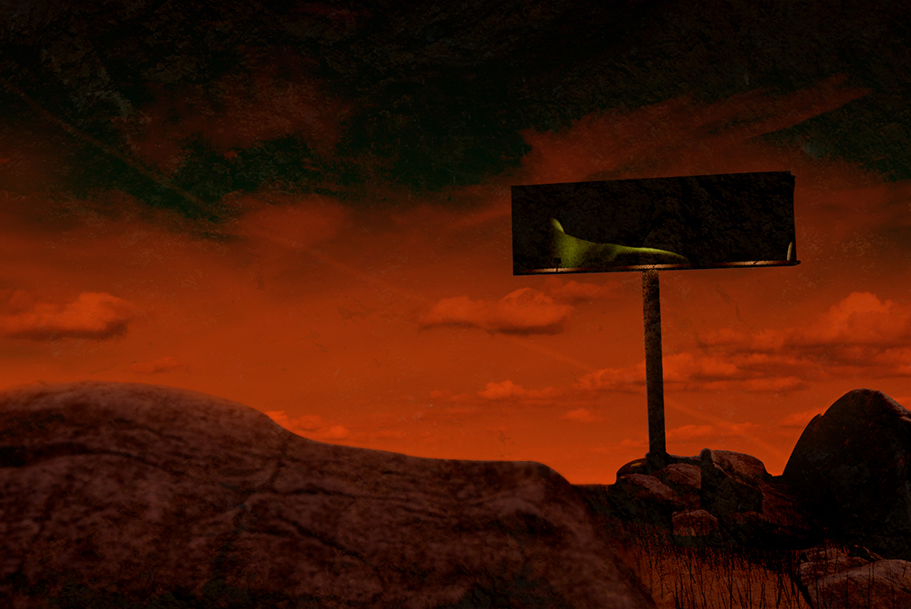
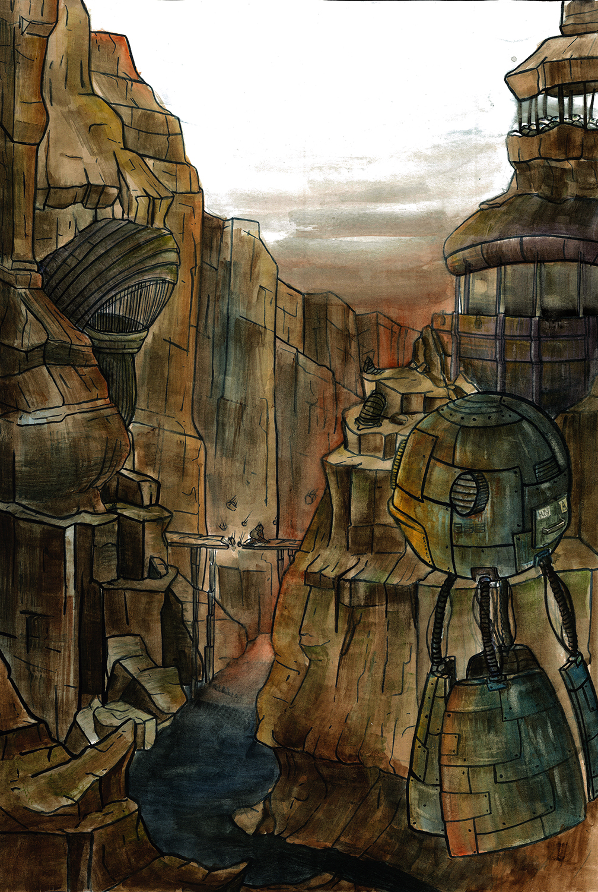

RAPTURE
Trabalho realizado em conjunto com Ricardo Bernardo


As nossas experiências foram dirigidas para o sal, que encapsula em plenitude o objetivo da proposta. Sendo um material de extrema beleza e incrível resiliência, que mesmo depois de dissolvido retoma a sua forma anterior, com até mais esplendor, sem esquecer que é natural e simboliza pureza, não apenas por ser um catalista de superstições antigas, mas também por ser um ingrediente que afasta bactérias e outros agentes deteriorantes (antigamente a salga era o principal e o mais seguro meio de conservação das carnes e peixes), foi, portanto, uma ferramenta para o sucesso do ser humano, outro exemplo de resiliência extrema (se não singularmente, sem dúvida no sentido grupal, tal como formigas, bactérias, etc). Com isso em mente, partimos para representar o oposto: o sal, apesar de puro e resiliente, nas nossas experiências comportava-se como um agente invasor, algo que se alastrava e nascia, deturpando o material base para cristalizar. Nessa contradição, é plenamente possível e belo fazer uma ponte entre essa reação e o ser humano, especialmente o ser humano enquanto invasor da natureza, algo que se alastra e deforma, usa e destrói para se tornar mais forte. E tal como o sal – que ao enfraquecer a sua base, torna a sua estabilidade ténue – também nós condenamos a nossa existência com a nossa resiliência.
___________________________________________________________________
LOST CITY
Trabalho realizado em conjunto com Ricardo Bernardo


___________________________________________________________________
Distopia
Trabalho em 3D

___________________________________________________________________
Triângulo Rosa
Trabalho Fotográfico realizado em conjunto com Ricardo Bernardo e Mário Teixeira
Atualmente esta descriminação é condenada socialmente, no entanto ainda se cria um estereótipo cruel e caricato. “Triangulo cor de rosa”, provêm do símbolo que foi originalmente utilizado nos campos de concentração nazi para identificar os prisioneiros homossexuais. Aqueles que fossem ju¬deus e homossexuais (considerados o pior nível de prisioneiros) deviam levar um triângulo rosa com outro de cor amarela. Em ambos os casos, deviam usar esta insígnia sobre o peito, cosido na sua rou¬pa. Estima-se que cerca de 220.000 gays e lésbicas morreram junto aos seis milhões de judeus que os nazistas exterminaram nos campos de concentração durante a Segunda Guerra Mundial. Por esta razão, a partir de 1970 o triângulo rosa utilizou-se tanto como um símbolo identificativo para recordar as atrocidades sofridas pela comunidade homossexual durante a perseguição nazista, como para rep¬resentar a união da cultura homossexual. Abordámos esse mesmo problema fundindo géneros visuais, a ultraviolência de Kubrick no filme “A Clockwork Orange” com a invulgar palete de cores dos filmes de Wes Anderson, com o intuito de criar um desconforto ao espetador, uma gargalhada que faz pensar após breves momentos em algo horrível. As personagens intervenientes na ação são estereótipos carregados de influências cinematográficas, o homossexual, torturado pelas duas personagens homofóbicas (uma inspirada na personagem de Edward Norton no filme “American History X”, a outra inspirada na personagem de Malcolm McDowell no filme “A Clockwork Orange”). O local escolhido para a representação foi um palco, para realçar a teatralidade da cena, e banalizar o ato de violência física sobre o homossexual, da mesma forma que o ato de banalizar a violência psi¬cológica nos mesmos acontece na vida real, sem que maior parte das pessoas tenha noção disso, tal é a profundidade do estigma do homossexual. Em quanto grupo não quisemos usar a fotografia apenas como uma meio de comunicação mas tam¬bém como uma meio de expressão artística.
___________________________________________________________________
THE INCREDULITY OF SAINT THOMAS
Recriação fotográfica em conjunto com Ricardo Bernardo, Mário Teixeira e Jonathan Rosildo

___________________________________________________________________
Gunzowski
Trabalho em 3D
___________________________________________________________________
Winston
Ilustração digital


Ilustração
Caverna Gunzowski

Brutos

Squeezie
